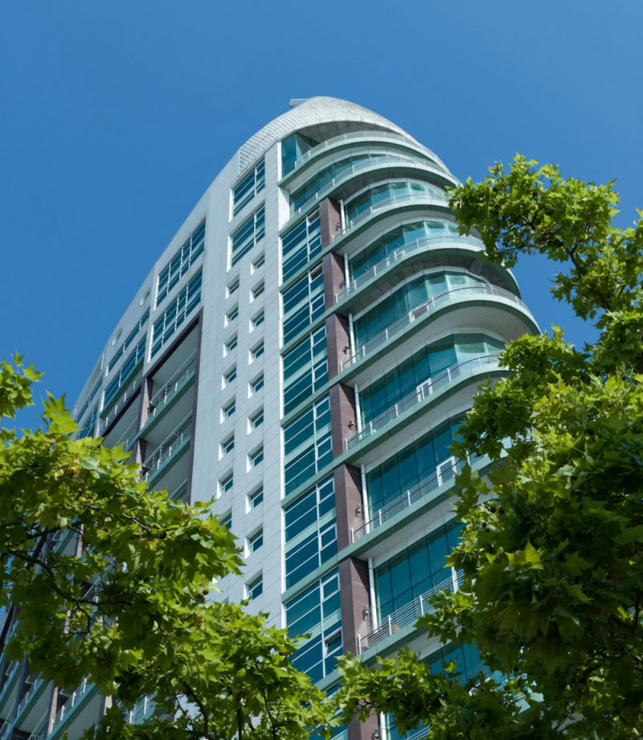
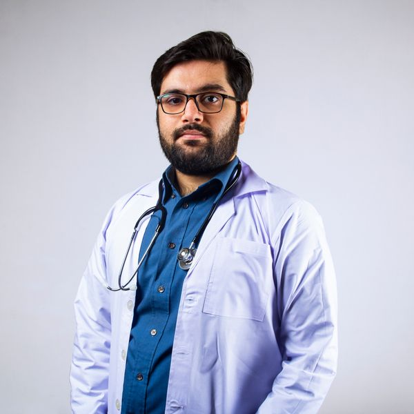
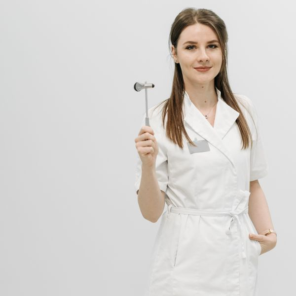

Saqué el turno un domingo a la noche desde el celular y el martes ya estaba sentada en el consultorio. Nunca más una hora esperando que me atiendan el teléfono.
Turnos online disponibles
Cuidamos tu salud, para que vos te ocupes de sonreír.
Centro de atención ambulatoria en Núñez con más de 20 especialidades, laboratorio y diagnóstico por imágenes en un mismo lugar. Reservá tu turno en menos de un minuto, sin llamadas ni esperas.
- Sin derivaciones
- Obras sociales y prepagas
- Resultados online
Turno en 48 h
promedio de espera
4,8 / 5
satisfacción de pacientes
Especialidades
Todo lo que necesitás, en un solo lugar
Atención ambulatoria de adultos y chicos. Las especialidades marcadas ya tienen turnos disponibles para reservar online.
-
Clínica Médica
Control general, seguimiento de enfermedades crónicas y apto físico.
Turnos online -
Cirugía General
Consultas prequirúrgicas, curaciones y controles postoperatorios.
Turnos online -
Pediatría
Control de niño sano, crecimiento y desarrollo desde el nacimiento.
Turnos online -
Vacunación
Calendario nacional, antigripal y vacunas para viajeros.
Turnos online -
Cardiología
Electrocardiograma, ergometría y control de presión arterial.
Turnos online -
Ginecología
Control anual, PAP, colposcopía y asesoramiento anticonceptivo.
Turnos online -
Odontología
Ortodoncia, limpieza y arreglos, para adultos y chicos.
Turnos online -
Dermatología
Control de lunares, acné y dermatoscopía digital.
-
Traumatología
Lesiones deportivas, dolor de columna y rehabilitación.
-
Oftalmología
Agudeza visual, fondo de ojo y control de presión ocular.
-
Endocrinología
Tiroides, diabetes y trastornos metabólicos.
-
Nutrición
Planes personalizados y acompañamiento en cambios de hábitos.
-
Kinesiología
Rehabilitación motora, respiratoria y terapia manual.
-
Neurología
Cefaleas, mareos, epilepsia y trastornos del sueño.
-
Otorrinolaringología
Oídos, nariz y garganta. Audiometrías y vértigo.
-
Urología
Control prostático, cálculos renales e infecciones.
Diagnóstico
Estudios en el día, resultados online
Contamos con laboratorio propio y equipamiento de diagnóstico por imágenes. Recibís los resultados en tu correo y quedan guardados en tu historia clínica digital.
- Extracciones sin turno previo, de 7 a 10 h
- Resultados de laboratorio en 24 horas hábiles
- Informes firmados digitalmente por el profesional
-
Laboratorio clínico
Análisis de sangre, orina y cultivos.
-
Ecografías
Abdominal, ginecológica, tiroidea y obstétrica.
-
Radiología digital
Baja dosis, con informe el mismo día.
-
Cardiología no invasiva
Electrocardiograma, ergometría y Holter.
Aranceles
Valores claros, sin sorpresas
Estos son los valores para pacientes particulares. Si tenés obra social o prepaga, consultanos: en la mayoría de los planes la cobertura es total o casi total.
-
Consulta médica
Con clínico o especialista: control general, apto físico y renovación de recetas.
a partir de$45.000
Consultar -
Más solicitado
Ecografías
Abdominal, ginecológica, tiroidea y obstétrica, con informe firmado por el profesional.
a partir de$60.000
Reservar estudio -
Ortodoncia
Brackets metálicos por maxilar, con diagnóstico, colocación y primer control incluidos.
a partir de$180.000
Consultar
Valores orientativos para pacientes particulares, vigentes a agosto de 2026. Los precios pueden variar según la complejidad de la prestación. Consultá tu cobertura al (011) 5555-0142.

Desde 2001
en el barrio de Núñez
El Centro
Un centro pensado para que la consulta sea simple
Funcionamos en una torre sobre Av. del Libertador, con consultorios amplios, accesibilidad completa y sala de espera para familias. Todo el edificio es de atención ambulatoria: no vas a cruzarte con guardias ni internación.
- Accesible en silla de ruedas, con ascensores amplios
- Estacionamiento propio para pacientes
- Sala de juegos en el sector de Pediatría
- Historia clínica digital, accesible desde tu celular
- 0 años de trayectoria
- 0 especialidades
- 0 consultas por año
Nuestro equipo
Profesionales que te acompañan
Estos son los profesionales con agenda abierta esta semana. Podés elegir con quién atenderte al momento de reservar.
-
Dra. Valiria Sotelo
Cirugía General
M.N. 118.402
-

Dr. Fernando Ledesma
Clínica Médica
M.N. 96.771
-
Lic. Victoria Ruiz
Vacunación
M.N. 54.310
-

Lic. Miranda Feimann
Pediatría
M.N. 132.885
Sonrisas
Lo que dicen nuestros pacientes
Me hice el chequeo integral completo en una sola mañana: consulta, sangre y electro. Los resultados me llegaron por mail a las 24 horas.
Llevo a mis dos hijos a Pediatría desde que nacieron. La sala de juegos hace que la espera sea otra cosa, y siempre nos atienden en horario.
Vine por una consulta puntual y terminé mudando toda la familia acá. Que esté todo en el mismo edificio te cambia el día.
¿Reservamos tu turno?
Trabajamos con obras sociales, prepagas, planes corporativos y pacientes particulares. Si no estás seguro de tu cobertura, escribinos y lo vemos juntos.
- Obras sociales
- Prepagas
- Planes corporativos
- Particulares
Contacto
Dónde estamos
-
Dirección
Av. del Libertador 7250
A 400 m de la estación Rivadavia (Mitre)
Núñez, C1429 CABA -
Teléfono
Conmutador, de lunes a sábado -
Correo
Respondemos dentro de las 24 h -
Horarios
Lunes a viernes de 8 a 20 h
Laboratorio: extracciones de 7 a 10 h
Sábados de 9 a 13 h